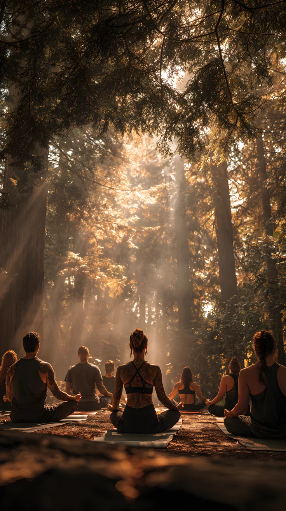
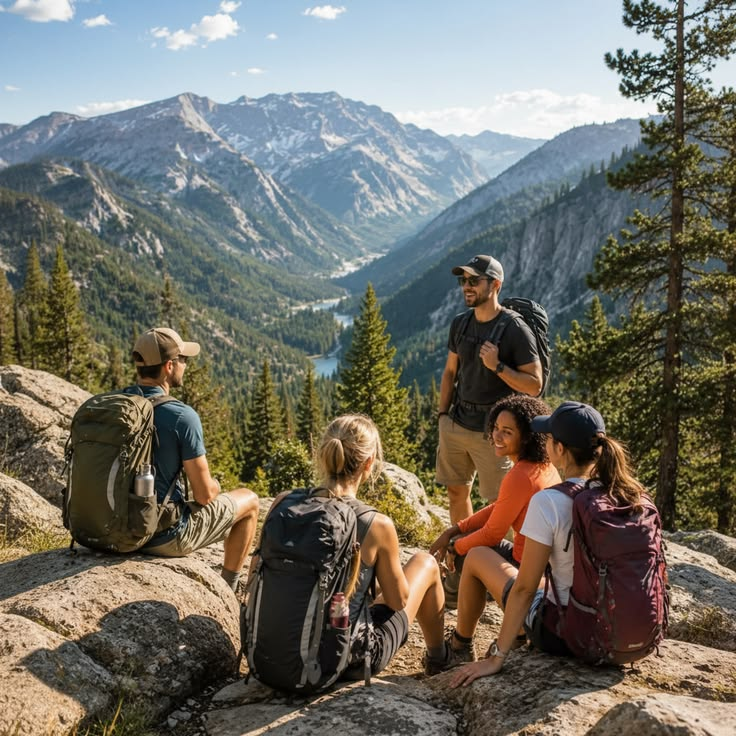
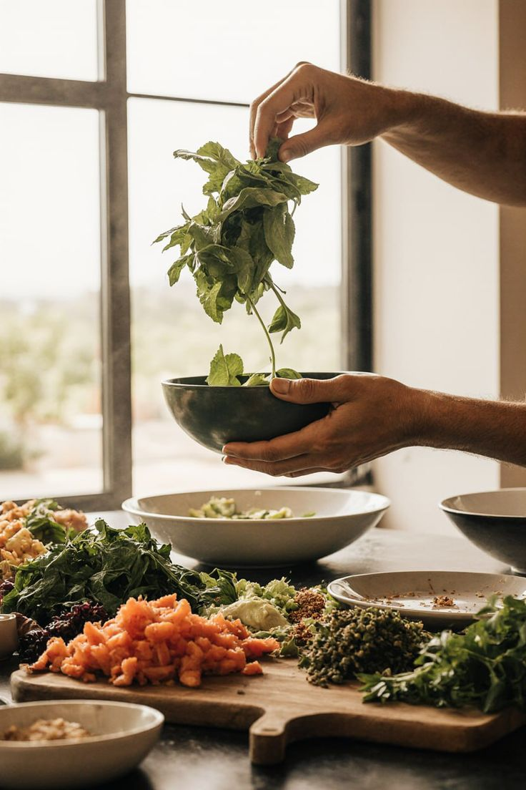
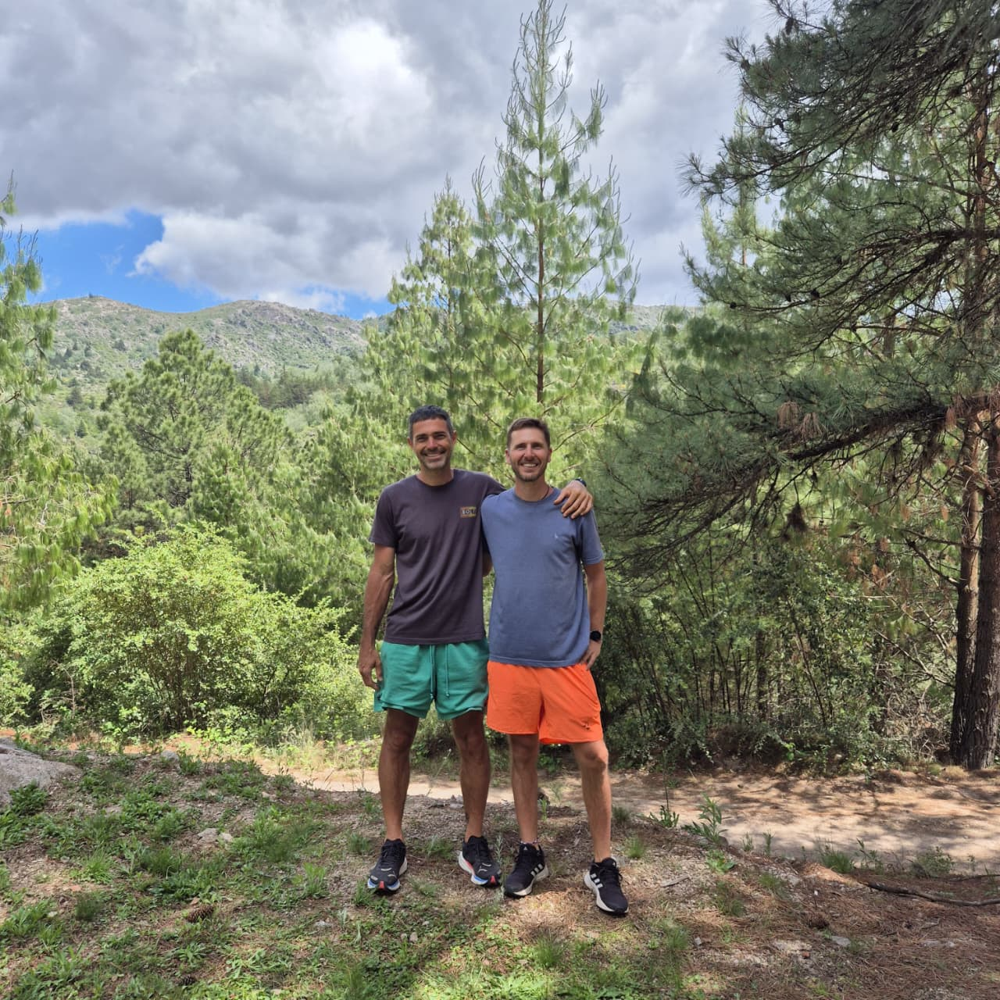

Tiempo para Vos
Momentos sin exigencias ni responsabilidades para descansar, leer, contemplar o simplemente disfrutar del placer de no tener que hacer nada.
Entre responsabilidades, trabajo y rutina, muchas veces nos dejamos para después. Pausa es una invitación a detenerte, descansar y volver a encontrarte con vos misma en un entorno cuidado, rodeada de naturaleza y acompañada por otras mujeres que también eligieron darse este tiempo.
Nuestra vida cotidiana suele estar llena de compromisos, responsabilidades y exigencias que muchas veces nos dejan en último lugar.
Pausa es una invitación a regalarte un fin de semana para descansar, reconectar con vos misma y compartir experiencias junto a otras mujeres en un entorno natural que favorece la calma, la reflexión y el bienestar.

Cada encuentro está pensado para crear espacios de descanso, reflexión y conexión. Una invitación a bajar el ritmo cotidiano y volver a escucharte.
Momentos sin exigencias ni responsabilidades para descansar, leer, contemplar o simplemente disfrutar del placer de no tener que hacer nada.
Prácticas suaves de yoga, respiración consciente y relajación diseñadas para aquietar el cuerpo y regular el sistema nervioso.
Ejercicios guiados y espacios de introspección para ordenar pensamientos, reconocer necesidades y conectar con lo que hoy es importante para vos.
Caminatas suaves, paisajes de montaña y momentos al aire libre que invitan a bajar el ritmo y volver al momento presente.
Conversaciones genuinas y espacios de escucha donde compartir experiencias con otras mujeres que también eligieron darse esta pausa.
Una experiencia pensada para acompañarte más allá del retiro, con aprendizajes, prácticas y recursos que podés integrar en tu vida cotidiana.
Cada edición puede tener características particulares. Esta información sirve como referencia general para conocer cómo se desarrolla la experiencia.
3 días y 2 noches de alojamiento en El Remanso Resort.
Alojamiento, actividades, material de trabajo exclusivo y acompañamiento durante toda la experiencia.
Viaje grupal ida y vuelta desde Rafaela organizado por Microbus.
Todas las comidas incluidas, con opciones vegetarianas, veganas y sin gluten.
Encuentro grupal exclusivo para mujeres con espacios de descanso, reflexión y bienestar.
La inscripción queda confirmada una vez abonada la seña correspondiente.
Pausa se desarrolla en El Remanso Resort, un espacio rodeado de bosque, tranquilidad y paisajes característicos de La Cumbrecita.
La naturaleza, el silencio y la comodidad del entorno crean el escenario ideal para descansar, reconectar con una misma y vivir la experiencia desde la calma.

Pausa fue creada por Gabriela Lamy, coach y creadora de este espacio pensado para mujeres que sienten la necesidad de detenerse, descansar y reconectar con aquello que realmente necesitan.
Su propósito es acompañar a mujeres que desean vivir con más calma, escucharse con mayor claridad y recuperar tiempo para sí mismas. Cada edición es diseñada con dedicación, cuidando cada detalle para que puedas sentirte contenida, acompañada y libre de disfrutar la experiencia.
Cada edición reúne momentos de descanso, conexión, reflexión y bienestar compartidos entre mujeres que eligieron regalarse este tiempo para sí mismas.

Encuentro Movimiento
Movimiento

Reflexión
BienestarSi todavía tenés preguntas sobre la experiencia, probablemente encuentres la respuesta aquí.
Sí. De hecho, muchas mujeres llegan solas. Pausa está pensada para generar un clima cálido, de confianza y acompañamiento desde el primer momento.
No. Todas las actividades están adaptadas para que cualquier mujer pueda participar, independientemente de su experiencia previa.
El viaje se realiza de manera grupal en transporte organizado desde Rafaela. Los detalles se informan antes de cada edición.
Sí. Además de las actividades propuestas, existen espacios para descansar, leer, caminar, contemplar el paisaje o simplemente disfrutar del tiempo para vos.
Mujeres de distintas edades y realidades que comparten el deseo de detenerse, descansar, reconectar consigo mismas y regalarse un tiempo de bienestar.
La inscripción queda confirmada una vez realizada la seña correspondiente. Podés consultar disponibilidad y medios de pago directamente con la organización.
Pausa es una invitación a detener el ritmo, descansar y reconectar con aquello que muchas veces queda postergado entre las responsabilidades de todos los días. Si sentís que este encuentro puede acompañarte en este momento de tu vida, estaremos felices de recibirte.


Cada propuesta fue pensada para regalarte un espacio de descanso, bienestar y conexión con vos misma.
Momentos sin exigencias para descansar, leer, contemplar o simplemente disfrutar de no tener que hacer nada.
Prácticas suaves de yoga, respiración consciente y relajación para recuperar calma y equilibrio.
Ejercicios guiados para ordenar pensamientos y conectar con lo que hoy necesitás.
Bosque, caminatas y momentos al aire libre para volver al presente.
Espacios de escucha y conversaciones genuinas junto a otras mujeres.
Prácticas y recursos simples para seguir cultivando bienestar después del retiro.
Información general sobre cómo se desarrolla la experiencia y qué incluye cada edición.
3 noches / 3 dias.
Alojamiento, actividades, material de trabajo y acompañamiento durante toda la experiencia.
Viaje grupal ida y vuelta desde Rafaela organizado por Microbus.
Todas las comidas incluidas con opciones vegetarianas, veganas y sin gluten.
La inscripción queda confirmada una vez abonada la seña correspondiente.
Consultanos para conocer las fechas disponibles.

Gabriela Lamy acompaña cada edición de Pausa creando un espacio donde el descanso, el bienestar y la conexión personal son protagonistas.
Si sentís que este retiro puede ser para vos, escribinos. Con gusto te contaremos las próximas ediciones y responderemos todas tus dudas.